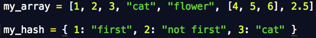

We all know the difference between a to-do list and a dictionary, so now it's time to explore arrays and hases in Ruby! Both arrays and hashes are indexed collections. This means that each item in your list or dictionary has a correponding position or key within that array or hash.
Like most things in Ruby, an array is an object. This object happens to be one that contains an ordered list. Arrays are highly versatile in that they can be a list of almost anything, strings, numbers, or even other arrays. You create an array by listing comma seperated items surrounded by square brackets. Unlike your to-do list, Ruby arrays always start at 0, not 1. If you were to ask for the first item in an array, you would get the second.
Here's a great rundown of all the useful things arrays can do
A hash is a collection of keys and values. I like to think of a "key" as being a word in a dictionary, and its "value" like the definition of that word. An array uses integers as its index (see above when we looked at our array element at position [0]), but a hash uses its keys. Hashes are useful in situations where you will have to keep track of the relationships between elements, where arrays just let you keep track of the order. Hashes use variables set to almost anything you like to set or get values in something that is a bit like an array, but not quite.
Arrays are better for keeping your elements in a specific order, but a hash can sometimesbe more convenient than an array because it acts just like them (except for the ordered part of course). It's easy to get data into a hash, but sometimes it can be tricky to get it back out in the exact order you want. If you need to preserve the relationships that your elements have to eachother (like in a dictionary!), a hash is the way to go.